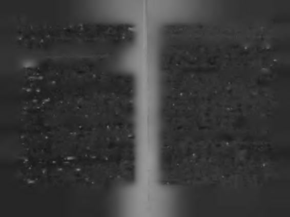
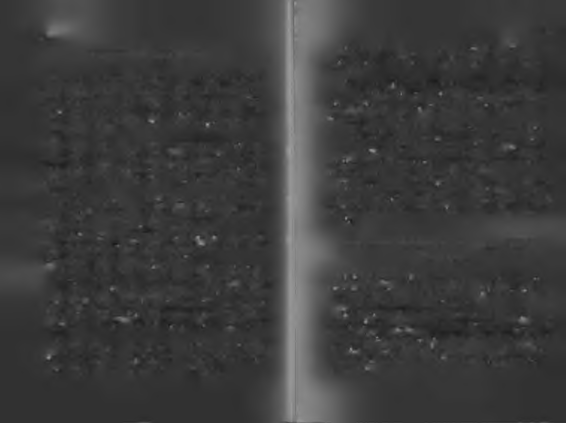
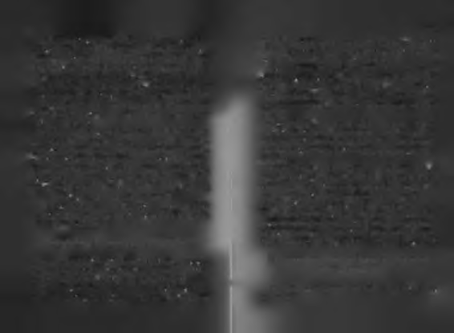
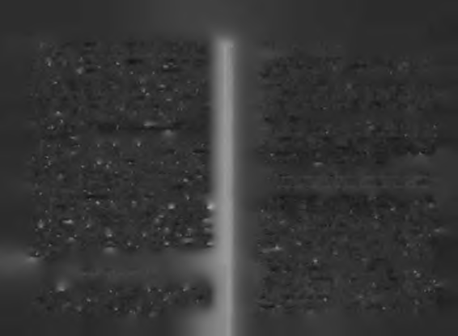
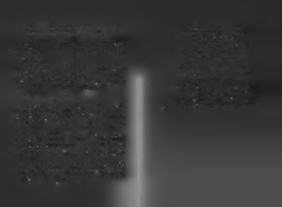
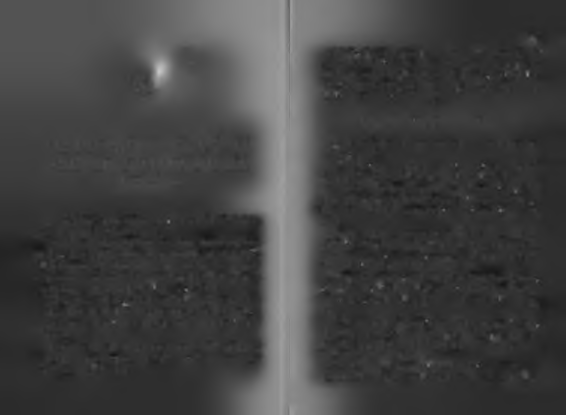

Zavallı kuş hızla yere düşüyordu.
" C e s a r e t i n " e s a r e t " t e n sadece bir h a r t fazlalığı v a r d ı r !
Sadece yuvasından değil, düş'ünden de düş'üyordu.
Yavru şahin yere düşerken, kanat çırpmaya devam etmiş,
Cesaret yedi harfli bir kelimedir, altı harflisi "esaret" tir.
büyük bir azimle çırpılan küçük kanatların etkisiyle havada
Esaret kelimesinin önüne, "c" harfi gelince, "cesaret" ortaya
sağa sola savrulup ağaç yapraklarının arasına denk gelmişti.
çıkar. Esareti cesarete çeviren bu "c" harfi, bazen cehaletin
Yapraklar onu ellerinde dolaştırırken, hem düşmenin şiddeti
"c"sidir! Bazen büyük bir iş başarırız çünkü onu neden başarama
hafiflemiş, hem de tam o sırada yavrularına yiyecek aramak
yacağımızı yeterince detaylı bilmiyoruzdur!
için dolaşan bir anne çaylak kuşu düşmekte olan yavrunun
Boşluğa bıraktı kendini bizim yavru şahin. Bilinmezlikle
çıkardığı gürültüyü duymuştu.
rin kucağına. Esaretten, cesarete. Hem de henüz palazlanmamış kanatlarıyla.
Anne çaylak önce yırtıcı bir kuşun yiyeceğini düşürdüğü
Küçük şahin özgürlüğe uçtu ama maalesef kanatları hayalleri
nü sandı. Onu kapmak için koştu ama hayat ona ilginç bir
sürpriz hazırlamıştı.
kadar güçlü değildi.
Hava boşluğunda çırpınmaya başladı.
Kanatlarını çırptı... Çırptı... Çırptı...
H a ya t bazen bir doğrunun b irk a ç yanlışı götürdüğü
Düşmeye başlayınca daha hızlı çırptı...
bir m atem atiğe s a h ip tir.
Biraz daha düştü, biraz daha hızlı çırpmaya başladı kanatlarını.
Anne çaylak gidip, yavru şahinin düşeceği yerde durdu,
Gittikçe yoruluyor, yoruldukça yere daha hızlı düşüyordu.
bekledi, tam düşeceği sırada düşenin bir yavru olduğunu
Hayal gücü ayaklarını yerden kesmeye yetmişti ama kaanlayıp, kanatlarını açarak onu kanatlarının üzerine aldı.
nat gücü onu hayallerine taşımaya yetmemişti.
Talih ile cesaret arasında aşk-nefret ilişkisi vardır! Talih cesa
Çığırmaya başladı. Avazı çıktığı kadar bağırıyordu.
reti bazen ölesiye sever, bazen kıskanır, ona çelme takar. Yav
Anne-babasını çağırıyordu.
ru şahinse talihin cesaretle arasının iyi olduğu bir anda yere
Ama yoktular.
düşmüştü.
Doğru bir şeyi yanlış zamanda yapmıştı ama cesaretinin ve ça
Hiç kim se kendi ç abasıyla çıkm adığı
basının gücü, yetersizliğin eksikliğini kapatmıştı. Hayat bazen
y ü k s e k lik te , kendi ç aba sıyla k a la m a z.
böyledir; bir güçlü doğru birkaç yanlışı kapatır!
Karşısında şahin yavrusunu görünce çaylak önce şaşırdı,
Şu hayat ne ilginçtir.
sonra sevindi. Bir yırtıcı kuşun yavrusu kollarına düşmüştü.
Hiç kimse kendi çabasıyla çıkmadığı yükseklikte, kendi çabasıy
O yavru artık onundu. Onu öldürüp kendi çocuklarıyla yiye
la kalamıyor. Bu, uçmak için doğan bir kuş olsa bile.

24
25
bilirdi ama o farklı bir şey yaptı. Onu da diğer çocuklarıyla be
İçte istek k a b a r ın c a , gitm ek mi z o r d u r , kalm ak mı? B urada n gidersem
raber, onlardan ayırmadan büyütmeye karar verdi. Böylece o bir
s a n a , k a lırs a m kendime ihanet e d e rim , nasıl ku rtu lu n u r bu ikilemden?
şahinin annesi olacaktı. Bu durum ona gurur vermiş, çok ho
şuna gitmişti.
Günlerden bir gün onun bu halini gören anne çay ak, neden bu kadar kederli olduğunu sordu. "İçimde bir sıkıntı 0 a rtık ç a y la k la r a ra s ın d a ya şa ya n b ir şahindi!
var," dedi çaylak şahin, "İzin verirseniz, buralardan gitmek,
değişik ülkeleri ve yerleri gezip, üzüntümü biraz dağıtmak
Cesur şahin, artık "çaylak" şahindi.
istiyorum!"
Çaylak yavruları arasında büyümeye başladı.
Anne çaylak duydukları karşısında çok şaşırmış ve üzül
Başlangıçta bir sorunları yoktu, gayet güzelce geçinip gimüştü. Sonra kendini toplayıp başladı konuşmaya: diyorlardı.
Yavru şahin büyüdükçe, kendisinin kardeşlerinden farklı oldu
Yaşadığımız yerde mutsuzsak ya da karnımızı doyura-
ğunu düşünmeye başladı. Bilirsiniz işte, ait olmadığı yerde, ait
mıyorsak başka ülkelere gideriz. Biliyorsun ki, senin duruolmadığı insanlar arasında yaşama duygusu. Anne çaylak, mun böyle değil. Seni diğer yavrularımdan ayırmıyorum. Bir
ona gerçeği söylememişti, çünkü bir yırtıcı kuşun annesi oldediğini iki etmiyorum. Seni çok sevdiğimi, sana ne kadar maktan gurur duyuyordu. Söylerse onu kaybetmekten kor
özendiğimi biliyorsun. Sana yedirdiğimi onlara yedirmiyorum. Senin için başka ne yapabilirim ki?"
kuyordu.
Acaba sizi kaybetmemek için size potansiyelinizle ilgili söylenen
Şahin yavrusu, suskun ve sessizdi.
yalanlar nelerdir? Bir insanı sevdiği için onu sınırlamak, onu
Başı öne eğik, düşünceli bir şekilde dinliyordu anre çay-
kaybetmemek için onun kendisini bulmasına engel olmak...
lağı.
Kaç anne, baba, sevgili, karı, koca yapıyor bunu?
Bilirsiniz belki, ait olduğu yere gitmek için sevdikleriyle
Her geçen günle beraber, yavru şahin kendisinin "öteki"
yüzleşme anı geldiğinde zor anlar yaşanır. İçte gitme işleği ka
olduğunu anlıyordu. Dışındaki herkesten farklı olanın, kendi içibarınca, gitmek de zordur, kalmak da.
ne sığınması; çevre daral(t)ınca, kendi içini genişletme çabasına
Şahin yavrusu giderse bir parçası (anıları, ailesi, geçmişi)
girmesi onda da görülüyordu. Gittikçe içine kapandı. Kardeşlegeride kalacaktı, kalırsa diğer bir parçası (cesareti, hayalleri, rinden uzak durmayı, yalnızlığı seçiyordu. Onlara sebepsiz
kendine duyduğu inanç) onu bırakıp gidecekti...
yere hüzünlü görünüyordu. İçinde bir huzursuzluk ve ait
Ait olduğumuz yeri bulmak için yola çıkmak isterken,
olduğum yerde değilim!" diyen bir ses vardı.
mevcudu terk edememek. Sizin de başınıza geldi mi hiç?

27
26
Hikâyeyi tamamlayan anne çaylak, "Eğer elindekilerle
Biiyiik düşünmek m i, küçük yaşamak mi
yetinmezsen, senin de sonun böyle olur, bu hikâyeden ders
al," dedi.
Anne çaylak, şahinin kararlı olduğunu görünce, ona belki
Elindekilerle yetinmek mi, yapabileceğinin en büyüğünü yap
ikna olmasına yardımı olur diye uzaklara gitmenin tehlikele
mak, olabileceğinin en iyisi olmak mı? Hangisini tercih etmeli inri üzerine bir hikâye anlattı. Her başarı öyküsünün bir yerinsan? Siz şahinin yerinde olsaydınız, bu hikâyeyi dinledikten de kahramana anlatılmış "boşuna deneme, olmayacak" öysonra ne yapardınız?
küsü vardır. Şimdi de yavru şahin bu kendine inanma sınavım
Sizi bilemem ama bizim özgür ve özgün ruhlu şahin karaveriyordu.
rından dönmedi. Anne çaylak kendisini sevdiğinden, ona ya
Anne çaylağın, belki onu vazgeçirir düşüncesiyle anlattıkın olmak istediğinden bunları anlatıyordu. İyi niyetle ğı hikâye, yoksul ve yaşlı bir kadının, tembel ama açgözlü
yaklaşıp şahinin hayata karşı gözünü korkutmak istiyordu.
kedisi hakkındaydı. Yaşlı kadının artıklarıyla beslenen kedi,
Çünkü korkakları kontrol etmek daha kolaydır.
kadının yoksul olması yüzünden doğru düzgün bir şey yiye-
Onun için yavru şahinin ait olduğu yeri bulması değil,
miyordu.
her zaman sevebileceği yakınlıkta olması önemliydi. Ne
Her geçen gün zayıflıyor, çelimsizleşiyordu. Bir gün şiş
çok başarı, bu sevgi duygusuna kurban verilmiştir bir bilman, parlak tüylü bir kedi gördü. Onu kaplan, kendisini faseniz...
re gibi görüyordu. Ona nereden beslendiğini sordu.
"Padişahın sarayına gidiyorum, sen de gel, sen de iyi beslen," dedi. İki kedi anlaştılar. Semiz kedi, saraya bir sonraki Bildiğinin ötesine g itm enin , kendi ka n atlarıyla uçmanın iidiiliinii de
gidişinde miskin kediye haber verecekti.
bedelini de yaşadı.
Miskin kedi akşam yaşlı kadma konuyu açtı. Yaşlı kadın,
"Hırs insana zarar verir, bulduğuna şükretmeli!" dedi. Kedi güldü.
Hikâyenin sonunda şahin yavrusu, bilinmedik topraklara
Sabah semiz kediyle beraber saraya gittiler. Gördükleri
kanat açmaya karar verir. Kırılmadan ve kırmadan, asil ve
ilk yemek artığına atıldılar. Ama o gün sarayda bir şeyler
minettar bir şekilde veda eder ailesine.
değişmişti. Padişah yüzlerce kedinin gürültüsünden rahatsız ol
Onları kendi küçük dünyalarında mutlu yaşamlarıyla bıramuş, yabancı kedilerin görüldüğü yerde okla vurulmasını emretkır, kendisi ait olduğu yeri, bildiğinin ötesinde olanı, yaşamadımişti.
ğı ıçiıı çok şey kaçırdığı yerleri, içgüdülerinin götürdüğü yeri
Okçular harekete geçince, diğer kediler hemen kaçtı. Bi
görmeye kanat açar. Kendi kanatlarıyla uçabiliyordun Hem
zim tecrübesiz ve tembel kedi onlar kadar atik değildi, kaçade uçmak istediği yere, uçmak istediği kadar. Limiti kendimadı. Midesinden yediği bir okla oracıkta öldü.
sidir artık.

28
29
Bildiğinin ötesine gitmenin, kendi kanatlarıyla uçmanın ödülü
insanlar da kötü insanlar da çıkmıştır, onlara destek olanlar
nü de bedelini de yaşar. Daha önce görmediği yerler görür. Dakadar engel olanlar da olmuştur. Umutlarına kanat verenlerha önce avlamadığı kuşlar avlar. Daha önce tanımadığı düşle de, kanatlarını kıranlarla da karşılaşırlar.
manlarla kapışır. Daha önce yaşamadığı sert iklimlere alışır.
Hemen hepsine, "Senden bir şey olmaz, hayal kurma, üzülür
O, kendisi için doğru olanı yapmıştır. İçindeki "fabrika ayarlasün," diyen birileri de vardır. Güzel hayalleri kürtaj eden bu ki
rına" dönmüş, içinde olana uygun yaşamış, "yüreğinin götürdüğü
şi çoğu kez, onları seven, iyi niyetli, en yakınlarındaki insan
yere" gitmiş, iç sesindeki kendini bulmuştur. İçindeki kasvet
lardan biridir. İnanırım ki, “Cehennemin yollan iyi niyet taşla
duygusu dağılmıştır artık, her kanat açışında daha fazla içi
rıyla döşelidir," sözü ilk defa bu hayal katilleri için söylenmiş
açılır. "Eğer orada kalsaydım, bütün bunları yaşamamış olaolmalıdır!
caktım," der sık sık.
Neyse ki bu insanların çoğu, şahin yavrusu gibi, "Sen ya
Kalile ve Dimne'ye göre hikâyenin sonunda, bir gün bipamazsın" öykülerine karşı güçlü bir bağışıklık sistemine sazim şahin bir kral görür. Kral doğanıyla ava çıkmıştır. Bir kuhiptir. Yapamazsın öykülerine karşı, yapabilenlerin öyküle
şu yakalaması için doğanını serbest bırakır. Bizim şahin doriyle, yani "azmin zaferi" hikâyeleriyle kendilerini savunma
ğandan atik davranıp, ondan önce kuşu yakalar. Bunun üzeyı bilirler.
rine kral himayesindeki şahinlerden birini ona gönderir, ye
Bir gün, gitmek zamanı geldiğinde, sevdiklerine sadakat,
teneğini takdir ettiğini, gelip sarayında yaşaması için davet
kendi başarı kapasitelerine ihanet anlamına geldiğinde, hayalettiğini söyler. Şahin daveti kabul eder ve saraylı şahin olur.
leri için "vakur bir edayla" çekip gitmeyi bilirler. Gitmek za
Kral onu çok sever. Sarayın en gözde şahini olur.
manı geldiğinde kalıp da bir ömür söylenmektense, giderken
Her şey sınırlarını zorlamakla başlamıştır. Hayal ettiğiniçinden birkaç damla gizli gözyaşı dökmeyi tercih ederler.
den fazlasını hayatında görmekle devam etmiştir. Kadim
Ve bir gün, bir şekilde -kralın şahinin içindeki cevheri gör
Hint öyküsü böylece biter.
mesi gibi- önemli birileri tarafından keşfedilip değerlendirilirler! İnsanın içinde "cevher" varsa, bu bir gün, bir yerde, bir şe
O kuduğunuz h ik â ye , kendi k a n a tla rıyla uçmanın ana tn m isidir!
kilde, kendini gösterir. Atasözüdür; delikli boncuk yerde kalmaz!
Yavru şahinin hikâyesi kendi kanatlarıyla yükselmeye ça
Bana bu öyküde aklınıza takılan y e r i s ö y le y in , size kanatlarınızın
lışanların yaşadıkları pek çok tipik durumu yansıtır. Hayatakıldığı y e r i sö yle ye yim !
lindeki hayata kendi kanatlarıyla uçanlar neler yaşar?
Hemen hepsi bir dönem ait olmadıkları yerlerde, ileride hayatla
Okuduğunuz hikâyede kendi hayatınıza karşılık gelen ne
rında olmayacak insanlar arasında yaşamışlardır. Karşılarına iyi
buldunuz?

30
31
Yavru şahinin büyüklerinin sözünü dinlemeyip, içinden
1. Her şey aslına çeker.
gelen sesi izlemesi mi? Şahinin kendi kanatlarıyla uçmaya
Hepimiz kalbimizin derinliklerinde taşıdığımız bir tutku
çalışırken, kafa üstü yere düşmesi mi? Anne çaylağın onu
ya sahibiz. Yüz vermesek de, sesini dinlemesek de, o tutku
kurtarması mı? Şahinin çaylaklar arasında büyümek durubizi biz yapan şeydir.
munda kalması mı? Anne çaylağın ona potansiyeli hakkında
Şahin yavrusu şahin olmak için doğmuştur. Aslına dönyalan söylemesi mi? Şahinin zamanla asıl "fabrika ayarlarımeli ve fabrika ayarlarına uygun yaşamalıdır. Şahin yavrusu na" dönmesi mi? Bir gün yavru şahinin çaylak ailesini bıraolmak için doğduğu şeye ters yaşadıkça içi sıkıntıdan kurtul-kıp gitmesi mi? Şahinin çaylak ailesinden ayrıldıktan sonra
mayacaktır.
başına gelenler mi? Sonunda saray şahini olması mı?
İç sıkıntısı bizleri ait olduğumuz koordinatlara davet
Dikkatinizi çekerim; aklınızın takıldığı yer, hayatınızın takıl
eder. Kendi kapasitemizde olana ihanet edişimize karşı bizi
dığı yer olabilir?
uyaran sirendir. Mesajı şudur: Neyi yapmak için doğduysan,
Takılma noktanız, kanatlarınızı kapalı tutma nedeninizi
onu yaparak yaşa, yoksa kendini yaşamış sayma! Biran önce fabri
ele verebilir. Kanatlarınızı kullanmama nedeniniz, belki içi
ka ayarlarına dön, bu senin için son çağrıdır!
nizdeki sesi dinleyecek cesaretinizin olmamasmdandır. Belki, düşme korkusuyla uçamayanlardansmızdır. Belki diğer 2. Cesurca girişilmiş bir eylemin gücü, bazen doğru
insanlara güvenmediğiz için, yükselip hedef olmak istemi-
şeyi yanlış zamanda yapmanın eksiklerini kapatır.
yorsunuzdur. Belki sizin kim olduğunuz ve neleri yapamayacağınız ile ilgili size söylenenlere çok inanıyorsunuzdur.
Güçlü tutkular, insanı aceleci yapar! Tutkuluların en son öğ
Belki iyilikten kaybediyorsunuzdur; çaylak ailesini terk
rendikleri başarı dersi, sabırla beklemektir! Büyük bir iş başarma
edemeyip, sevdiklerinize ve sevenlerinize sadakat gösteretutkusuyla doğanlar, içlerindeki güçlü isteğin baskısıyla hep rek kendi başarı kapasitenize ihanet etmeyi seçiyorsunuz-acele ederler. Bu acelecilikleri, onları hata yapmaya açık hale
dur! Belki de sarayda baş şahin olmak yerine, çaylaklar aragetirir. Yavru şahin de, henüz hazır olmadan uçmaya kalkışsındaki en yetenekli şahin (küçük yerin büyük adamı) olmak tı, düz mantığa göre bu bir hata demektir ama tutkuyla girisize yetiyordur.
şilmiş bir eylem, bazen hazırlıksızlığın açıklarını kapatabilir.
Tabii her zaman değil!
Bu hikâyeden çıkabilecek d e r s le r neler?
Birçok insan patronunun kendilerinden "daha az gelişmiş" olduğunu düşünür! Bu kişiler kendilerinden daha az Eski çağlarda hayat dersleri daha çok hikâyeler üzerinden
donanımlı olan bu insanların nasıl kendilerinden daha fazla
verilirdi. Siz bu hikâyeden ne gibi dersler çıkardınız? Benim
yükseldiğini bir türlü çözemezler. Cevap, tutku ve cesaretin
kendi adıma çıkardığım birkaç ders aşağıda:
gücünün çoğu kez donanımın eksiklerini kapatmasıdır.

32
33
3. Sığ sularda yüzmek güvenli olabilir ama insan iyi
Öyle bir hayat yaşıyorum ki,
yüzücü olmayı boyunu aşan sularda öğrenir.
Cenneti de gördüm, cehennemi de.
Öyle bir aşk yaşadım ki,
İnsan yapabileceklerinin sınırını zorlamadan, gerçek kapasitesi
Tutkuyu da gördüm, pes etmeyi de.
nin neye yeteceğini tam olarak bilemez. Yapabildiğinin ötesini
Bazıları seyrederken hayatı en önden,
zorlamak ilerlemenin temelidir. Kendi sınırlarıyla yüzleş
Kendime bir sahne buldum, oynadım.
mek, gelişmektir.
Öyle bir rol vermişler ki
Sınırlarımızı zorlamayı denemeden, kendi kabuğumuzun
Okudum, okudum, anlamadım.
içinde yaşamak daha konforlu olabilir ama büyüme kapasi
Kendi kendime konuştum bazen evimde.
temizi daraltır. Sınırlarını zorlamak insana acı verebilir ama
Hem kızdım hem güldüm halime.
bu acı insanı büyütür. İngilizce bir deyimle söylersek: "No
Sonra dedim ki söz ver kendine;
pain no gain" yani "Acı yoksa, kazanç da yokl"
Denizleri seviyorsan, dalgaları da seveceksin.
Sevilmek istiyorsan, önce sevmeyi bileceksin
4. Düşmek uçmaya dahildir!
Uçmayı seviyorsan, düşmeyi de bileceksin
Korkarak yaşıyorsan, yalnızca hayatı seyredersin
Kendi kanatlarıyla uçmayı seçen, arada bir kendi kafası
Öyle bir hayat yaşadım ki, son yolculukları erken tanıdım.
üzerine düşmeyi de seçmiştir. Nietzsche "Uçmayı seviyorsan, düşmeyi de bileceksin," der. Bir İspanyol atasözü, "Attan düşmeyi öğrenmeden, ata binmeyi öğrenmiş sayılmazsın," der.
Kazanmayı delice isterken, arada bir kaybetmeye katlanmak da bir meziyettir. Hiç düşmemek değil, düştüğü yerde kalmamak insanı büyütür. Başarı, elleri beyaz eldivenli salon çocuklarını değil, dizleri kanamış sıkı çocukları sever.
İnsan hayalindeki hayata bazen uça düşe, bazen düşe kalka gider. Nietzsche'nin sevgilisi Salome'ye gönderdiği bir mektup, uça düşe yükselmenin milli marşıdır benim için. Kesilip cüzdanda taşınılası bir metindir.

35